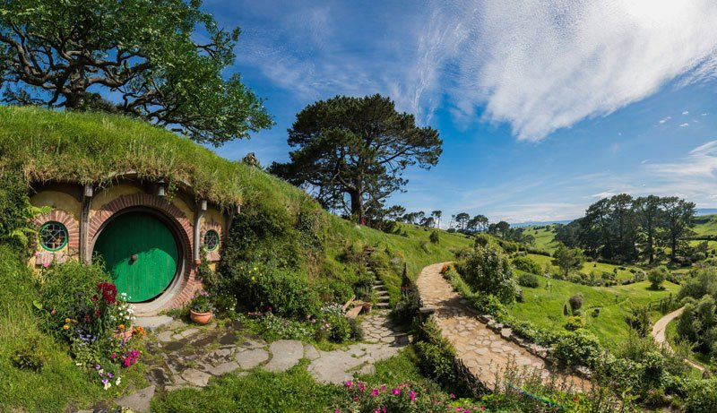
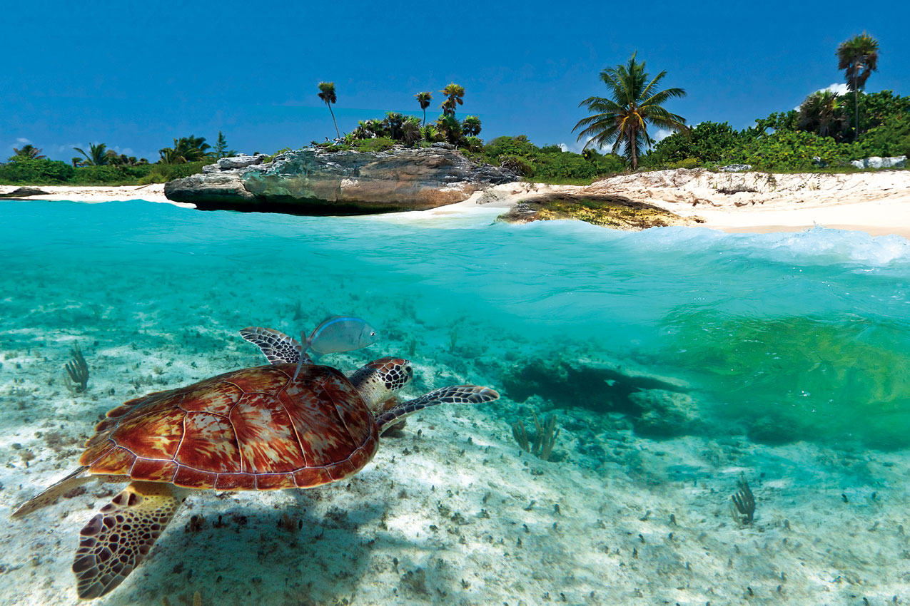
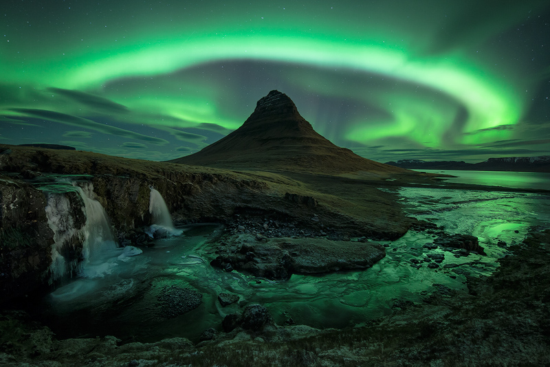

But whats that? You don't know where exactly you should take your vacation?
Then we have a solution for you
Using complex logic, complex alogrithms, and a survey we can give you a rough idea where you should go for vacation! Click the button below to begin.
Come to Japan!
Based of your answers, you should plan to take you vacation in the land of the cherry blossoms. If you wish to see the cherry blossoms plan on booking a vacy in April, as with the coming of spring comes fleeting beauty of cherry blossoms. Just be careful of who you anger, it is the land of shinobi after all, nothing like a shuriken in the back to cut your vactaion short.
Come to New Zealand!

Based of your answers, you should plan to take your vacation into the land of hobbits and sunshine. New Zealand has plenty to offer a Lord of the Rings enthusiaist, with tours of the locations in the famous triology. For those who could care less why a group of hobbits is traveling to Mt.Doom, there is plenty of sand, surf, and pristine waters to enjoy. Just look out for sharks, and maybe a stray orc or two.
Come to Carribean!

Based of your answers, you should plan to take your vacation to the tropical islands of the Carribean. Here you can find breath taking sunsets as you kayak back to the shore. Dive into the blue oceans and swim among the denizens of the deep, or perhaps go snorkeling in the in the colorful reefs. Or if find that too mundane, gather your best mates under the Jolly Rodger and create your own pirate legacy, be it four centuries too late.
Come to Iceland!

Based of your answers, you should plan to take your vacation to the land famous for runes, vikings, and Norse Mythology. Take a relaxing dip into the Blue Lagoon, or chose to go hiking in one of the many national parks. And if you plan to visit during fall or winter seasons, look up to the skies and gaze upon the beauty of the Aurora Borealis.